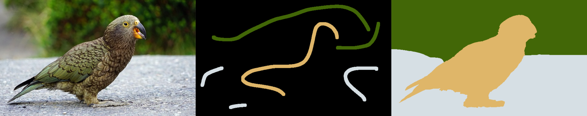
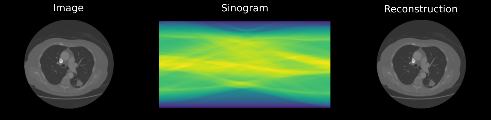
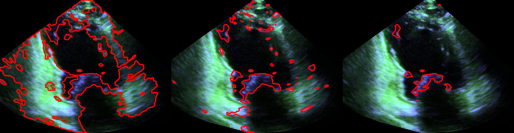
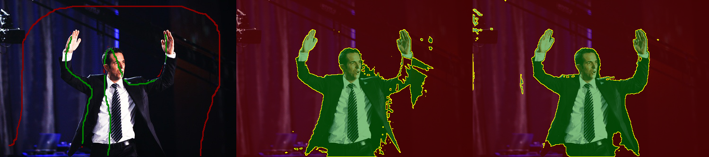
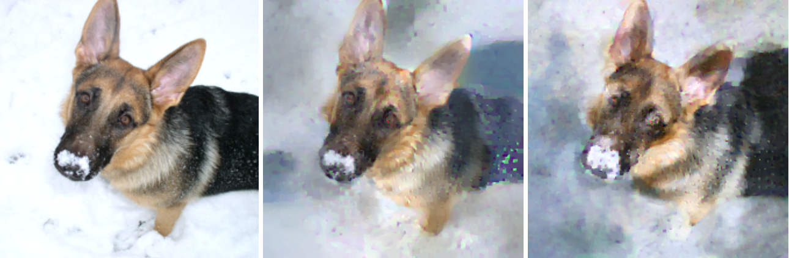

Markus Plack, Hannah Dröge

An unofficial Python implementation of the paper Spatially Varying Color Distributions for Interactive Multi-Label Segmentation by Claudia Nieuwenhuis and Daniel Cremers.

Digitally postprocessed images of "The Lung Image Database Consortium (LIDC) and Image Database Resource Initiative (IDRI): A completed reference database of lung nodules on CT scans." by Armato SG 3rd et al. [1]An open source implementation of radon transformation and filtered backprojection realized in pytorch for reconstruction for parallel beam projection of computer tomographic recordings. The operations are differentiable and can thus can be used for training via backprojection.
Hannah Dröge, Baichuan Yuan, Rafael Llerena, Jesse T. Yen, Michael Möller, Andrea L. Bertozzi

Analyzing and understanding the movement of the mitral valve is of vital importance in cardiology, as the treatment and prevention of several serious heart diseases depend on it. Unfortu- nately, large amounts of noise as well as a highly varying image quality make the automatic tracking and segmentation of the mitral valve in two-dimensional echocardiographic videos challenging. In this paper, we present a fully automatic and unsupervised method for segmentation of the mitral valve in two-dimensional echocardiographic videos, independently of the echocardiographic view. We propose a bias-free variant of the robust non-negative matrix factorization (RNMF) along with a window-based localization approach, that is able to identify the mitral valve in several challenging situations. We improve the average f1-score on our dataset of 10 echocardiographic videos by 0.18 to a f1-score of 0.56.
Hannah Dröge, Michael Möller

Single image segmentation based on scribbles is an important technique in several applications, e.g. for image editing software. In this paper, we investigate the scope of single image segmentation solely given the image and scribble information using both convolutional neural networks as well as classical model-based methods, and present three main findings: 1) Despite the success of deep learning in the semantic analysis of images, networks fail to outperform model-based approaches in the case of learning on a single image only. Even using a pretrained network for transfer learning does not yield faithful segmentations. 2) The best way to utilize an annotated data set is by exploiting a model-based approach that combines semantic features of a pretrained network with the RGB information, and 3) allowing the networks prediction to change spatially and additionally enforce this variation to be smooth via a gradient-based regularization term on the loss (double backpropagation) is the most successful strategy for pure single image learning-based segmentation.
Jonas Geiping, Hartmut Bauermeister, Hannah Dröge, Michael Möller

The idea of federated learning is to collaboratively train a neural network on a server. Each user receives the current weights of the network and in turns sends parameter updates (gradients) based on local data. This protocol has been designed not only to train neural networks data-efficiently, but also to provide privacy benefits for users, as their input data remains on device and only parameter gradients are shared. But how secure is sharing parameter gradients? Previous attacks have provided a false sense of security, by succeeding only in contrived settings - even for a single image. However, by exploiting a magnitude-invariant loss along with optimization strategies based on adversarial attacks, we show that is is actually possible to faithfully reconstruct images at high resolution from the knowledge of their parameter gradients, and demonstrate that such a break of privacy is possible even for trained deep networks. We analyze the effects of architecture as well as parameters on the difficulty of reconstructing an input image and prove that any input to a fully connected layer can be reconstructed analytically independent of the remaining architecture. Finally we discuss settings encountered in practice and show that even aggregating gradients over several iterations or several images does not guarantee the user’s privacy in federated learning applications.